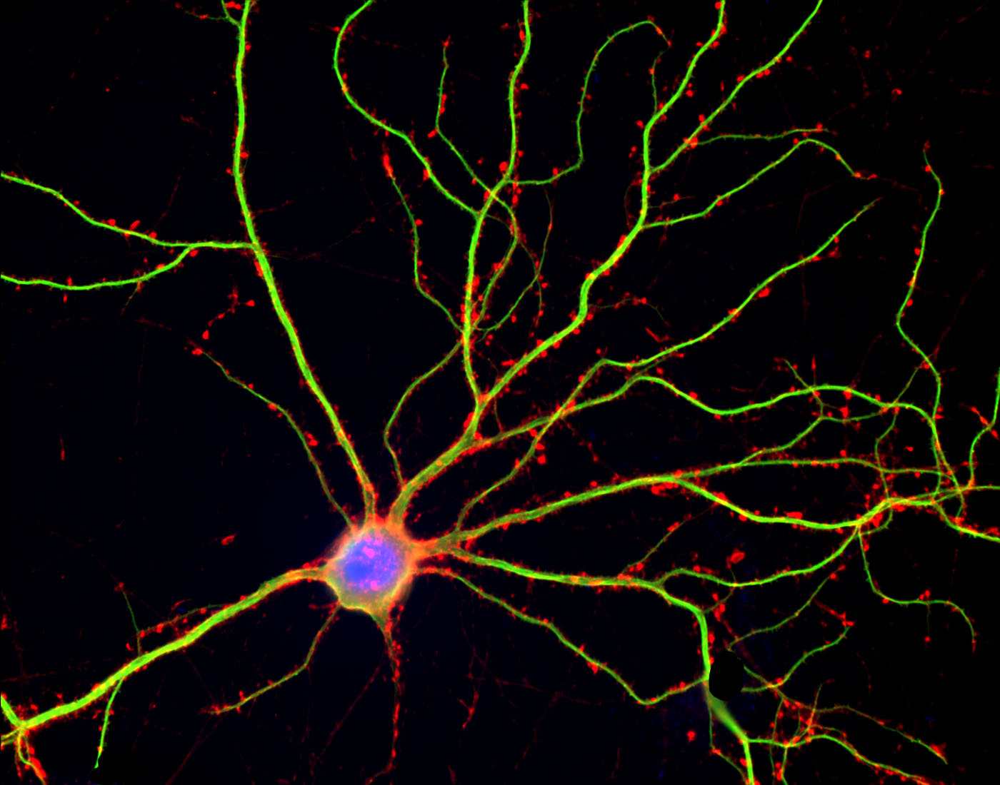
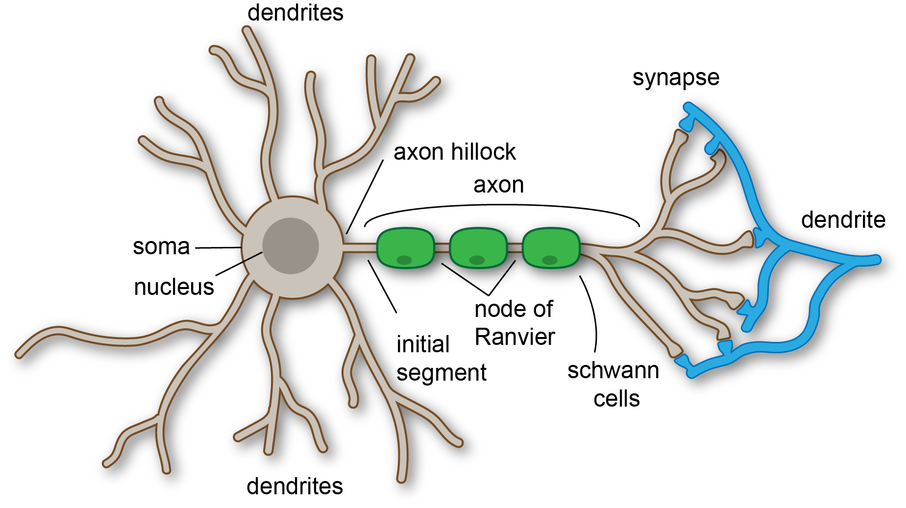
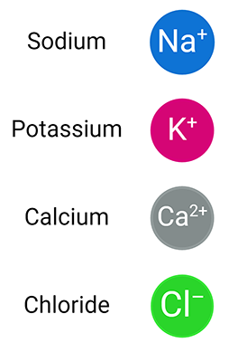
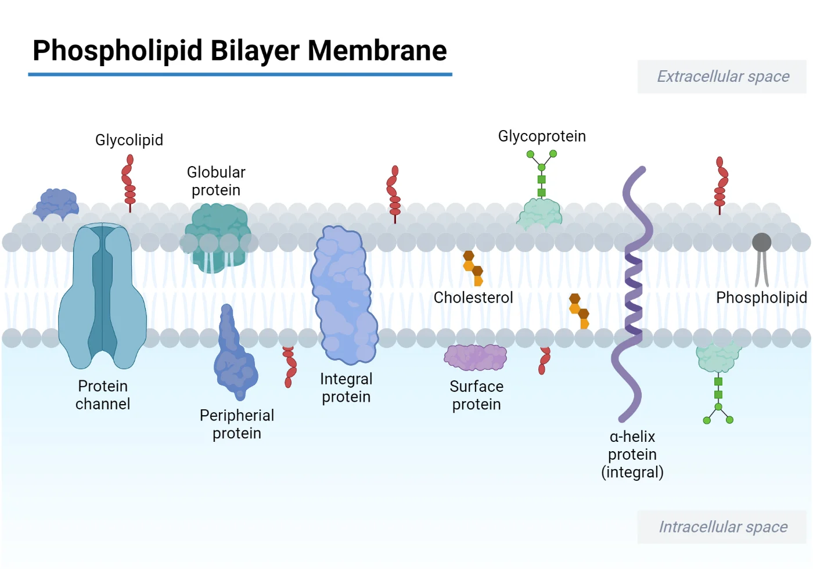
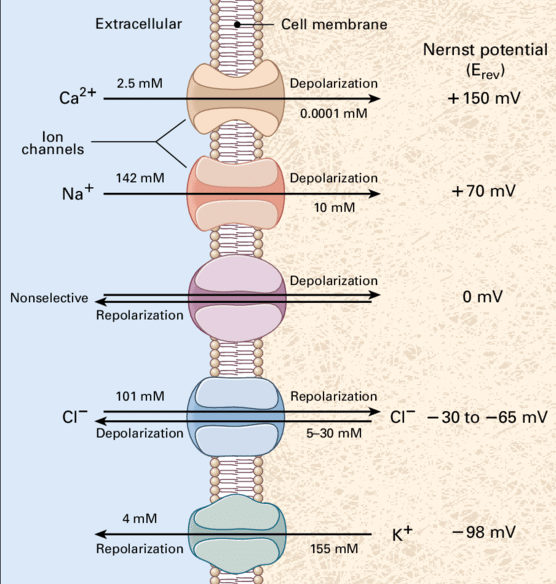

Neuroscience asks a simple question: How does the brain produce behavior?
Studies the Central (brain and spinal cord) and Peripheral (somatic, autonomic and enteric) nervous systems
Connects biology, psychology, physics, engineering, and philosophy
Goal of this course: build intuition about how the nervous system works, without assuming prior biology knowledge.
What Is a Neuron?
Neurons are the basic units of the brain.
Their main function is to send electrical signals over short and long distances.
They are electrically and chemically excitable. The function of a neuron depends on its structure.

Major Parts of the Neuron
Dendrites
Cell body (soma)
Axon hillock
Axon
Presynaptic terminal These components determine how signals are received, processed, and transmitted.

Diagram: Typical Neuron
A neuron has:
- Branching dendrites
- A soma with nucleus
- A long axon
- Terminal branches forming synapses
Dendrites
Branch out from the soma
Primary targets of incoming signals
The number of dendrites influences how many inputs the neuron can receive
Often contain spines, which increase surface area for synaptic contact
Cell Body (Soma)
Contains nucleus and organelles
Integrates incoming signals from dendrites
Biochemistry of the cell shapes its excitability and response properties
Axon Hillock
Junction between soma and axon
Location where action potentials are initiated
Sensitive to the summed electrical inputs from dendrites and soma
The Axon
Conducts electrical signals over long distances
May be myelinated to increase conduction speed
Can branch extensively
Presynaptic Terminal
End of the axon
Releases neurotransmitter onto postsynaptic cells
Forms multiple terminals for communication with many neurons
Neurons Communicate Electrically and Chemically
Electrical signals travel along the axon.
Chemical signals (neurotransmitters) are released at the synapse.
This dual mode of signaling enables fast and flexible communication.
Structure Influences Function
Examples: - More dendrites → more inputs
- Axon myelination → faster conduction
- Terminal branching → more downstream targets
Form and function are tightly linked in neuronal physiology.
Neuron Diversity (Overview)
Neurons vary in:
Size
Shape
Dendritic complexity
Axon length
Neurotransmitter type
This diversity supports specialized functions across the nervous system.
Summary of Key Concepts
Neurons are the fundamental signaling units of the nervous system
Structure determines function
Signals are electrical within neurons and chemical between them
Which part of the neuron initiates the action potential?
How do dendritic spines enhance synaptic communication?
Why does neuron structure influence neuron function?
Which part releases neurotransmitter?
Ion Movement
Neurons communicate using electrical signals.
These signals exist because ions move across cell membranes.
Understanding ion movement is the foundation for:
Electrical signaling
Membrane potential
Action potentials
Synaptic transmission
What Is an Ion?
An ion is an atom or molecule with an electrical charge.
Positive charge → cation
Negative charge → anion
In neuroscience, the most important ions are:
Sodium (Na⁺)
Potassium (K⁺)
Chloride (Cl⁻)
Calcium (Ca²⁺)

Why Charges Matter in the Brain
Electrical signals arise because:
Ions carry charge
Neurons separate charges across membranes
Differences in charge create electrical forces
No electricity, no neural signaling.
The Neuronal Membrane
The neuron is surrounded by a lipid bilayer membrane.
Key properties:
Electrically insulating
Impermeable to most ions
Contains specialized proteins that allow controlled ion movement
This separation is essential for signaling.
Ion Channels
Ion channels are proteins embedded in the membrane.
They:
Allow specific ions to cross
Are selective (not all ions can pass)
Can open or close
Ion movement only occurs through these channels.

Channel Selectivity
Ion channels are selective because:
Ions differ in size
Ions differ in charge
Channel pores are highly specific
Example:
Sodium channels allow Na⁺ but not K⁺
Potassium channels allow K⁺ but not Na⁺

Two Forces Acting on Ions
Ion movement depends on two forces:
Diffusion
Electrical attraction or repulsion
The combined effect determines ion flow.
Diffusion
Diffusion is movement from:
flowchart LR
A[High concentration]
B[Low concentration]
A -->|Net flow| B
B -. No net flow .-> A
style A fill:#2b2b2b,stroke:#67bdfb,color:#e6e6e6
style B fill:#2b2b2b,stroke:#67bdfb,color:#e6e6e6
linkStyle default stroke:#bbbbbb,stroke-width:2px
If more Na⁺ ions are outside the neuron than inside, Na⁺ tends to move inward.
It does not require energy.
Electrical Forces
Charged particles are influenced by:
Opposite charges attract
Same charges repel
A negatively charged interior attracts positive ions.
Electrochemical Gradient
The electrochemical gradient combines:
Chemical gradient (diffusion)
Electrical gradient (charge)
Ion movement depends on both at the same time.
This is the key principle of neural signaling.
Example: Sodium Ions (Na⁺)
Typically:
High Na⁺ outside the neuron
Low Na⁺ inside
Inside of neuron is negatively charged
Both diffusion and electrical forces push Na⁺ into the cell.
The inside of the neuron (and cells in general) is negative mainly because of large amount of anions inside the cell like proteins and other large organic anions (phosphates, metabolites).
Example: Potassium Ions (K⁺)
Typically:
High K⁺ inside the neuron
Low K⁺ outside
Electrical force pulls K⁺ inward
Diffusion pushes K⁺ outward
The two forces oppose each other.
Equilibrium Potential
The equilibrium potential is the membrane voltage at which:
Electrical force exactly balances diffusion
No net movement of an ion occurs
Each ion has its own equilibrium potential.
Important Concept
Different ions want to move in different directions.
Neural electrical signals emerge from:
Which channels are open
Which ions can move
The direction of ion flow
Calcium Ions (Ca²⁺)
Calcium is special because:
Very low concentration inside neurons
Strong electrical charge
Acts as both an ion and a signaling molecule
Opening Ca²⁺ channels has powerful effects.
Ion Movement Is Passive
Ion movement through channels:
Does not require energy
Is driven by electrochemical gradients
But maintaining the gradients require energy! The gradients are maintained by specific proteins called pumps that can move ions against their gradients.
Membrane Voltage
The neuron’s membrane separates electrical charges.
This separation creates a quantity called membrane voltage.
Voltage is a difference in electrical potential
It tells us how strong the electrical force is
It is measured across the membrane, not inside the cell
Voltage is not a substance and not a force.
It is a measure of how much electrical energy is available to move charges.
Equilibrium Potential (Formal Definition)
The equilibrium potential of an ion is:
The membrane voltage at which there is no net movement of that ion across the membrane.
Important points:
It depends on concentration differences
It depends on charge
The Nernst Equation
To describe equilibrium quantitatively, we use the Nernst equation.
\(E_{\mathrm{ion}}\): equilibrium potential of the ion
\(R\): gas constant
\(T\): absolute temperature
\(z\): ion charge (valence)
\(F\): Faraday constant
What the Equation Means (Not How to Use It)
You do not need to memorize this formula.
What matters is what it tells us:
Larger concentration differences → larger equilibrium voltage
Higher charge → stronger electrical effect
Each ion has its own equilibrium potential
The term (z) is the ion’s charge:
Ion
z
Inside Concentration
Outside Concentation
Equilibrium Potential
K⁺
+1
15 mM
145 mM
+ 60 mV
Na⁺
+1
125 mM
5 mM
-85 mV
Ca²⁺
+2
0.0002 mM
2 mM
125 mV
Cl⁻
-1
13 mM
150 mM
-65 mV
From Equilibrium Potential to Membrane Potential
So far we have described equilibrium for one ion at a time.
Real neurons are a bit different:
Multiple ion species are present
Multiple channels are open simultaneously
The membrane voltage reflects the combined effect of all ions.
What Is the Membrane Potential?
The membrane potential is: The electrical potential difference between the inside and the outside of the cell membrane. It is measured in millivolts (mV), 1 mV = 0.001 Volts (V).
Each ion has:
Its own equilibrium potential
Its own concentration gradient
But the membrane potential is:
Not equal to \(E_{\mathrm{Na}}\)
Not equal to \(E_{\mathrm{K}}\)
Not equal to \(E_{\mathrm{Cl}}\)
It lies between them.
Which Ion Dominates?
The influence of an ion depends on:
Permeability, a measure of how easily a given ion can cross the membrane through its channels.
At rest, neuronal membranes are:
Highly permeable to \(K^+\)
Weakly permeable to \(Na^+\)
Moderately permeable to \(Cl^-\)
As a result, the membrane potential is close to \(E_{\mathrm{K}}\).
In most neurons resting membrane potential is \(\approx -65\,\mathrm{mV}\). This reflects potassium dominance at rest.
Voltage Change
If channels open for an ion the membrane potential moves toward that ion’s equilibrium potential.
Example: Opening Sodium Channels
If \(Na^+\) channels open:
\(Na^+\) enters the cell
Membrane potential becomes less negative
Voltage moves toward \(E_{\mathrm{Na}} \approx +60\,\mathrm{mV}\)
This process is called depolarization.
Example: Opening Potassium Channels
If \(K^+\) channels open:
\(K^+\) leaves the cell
Membrane potential becomes more negative
Voltage moves toward \(E_{\mathrm{K}} \approx -90\,\mathrm{mV}\)
This process is called hyperpolarization.
The Goldman–Hodgkin–Katz Equation
When multiple ions contribute to the membrane voltage, the membrane potential is given by the Goldman–Hodgkin–Katz (GHK) equation:
This region decides whether a new type of signal is generated.
Action Potentials
If depolarization is strong enough:
A critical voltage is reached
A different electrical event is triggered
This voltage is called the threshold. Potentials beyond the threshold trigger Action Potentials.
Action potential: A large, rapid, and stereotyped change in membrane potential, originated at the level of the axon hillock, that propagates along the axon.
Why Action Potentials Are Needed
Graded potentials decay with distance.
To communicate over long axons, neurons need:
A signal that does not fade
A reliable, all-or-none event
That signal is the action potential.
To understand action potentials, we must explain:
Voltage-gated ion channels
Positive feedback
Time-dependent permeability changes
Membrane Proteins and Transport
The lipid bilayer is electrically insulating. Ions can cross the membrane only through membrane proteins.
Membrane transport proteins fall into two broad categories:
Channels
Transporters (carriers and pumps)
Ion channel: A protein that forms a continuous aqueous pathway across the membrane, allowing ions to move down their electrochemical gradient.
Properties:
Do not use metabolic energy (passive)
Do not move ions against gradients (no energy)
Selective to specific Ions
Channel Gating
Ion channels are not static holes.
They fluctuate between:
Closed states
Open states
Gating: The process by which an ion channel switches between open and closed states.
Channels can be gated by different physical signals:
Chemical binding (ligand-gated - e.g. Neurotransmitters)
Mechanical deformation (mechanosensitive)
Membrane voltage (voltage-gated - activated when the membrane cross a specific voltage)
Graded Potentials and Channels
During Graded Potentials:
Passive channels remain unchanged
Voltage-gated channels remain mostly closed
Voltage changes are passive and proportional to input and decay over space-time.
When depolarization is small:
A few voltage-gated \(Na^+\) channels open
Resulting \(Na^+\) influx is weak
Leak and \(K^+\) currents counteract depolarization